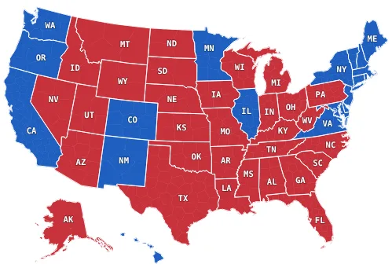
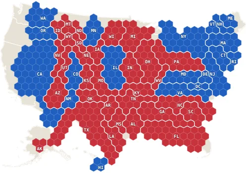
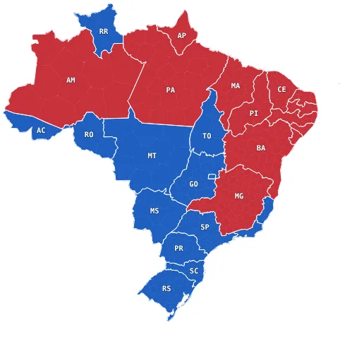
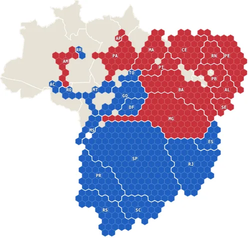
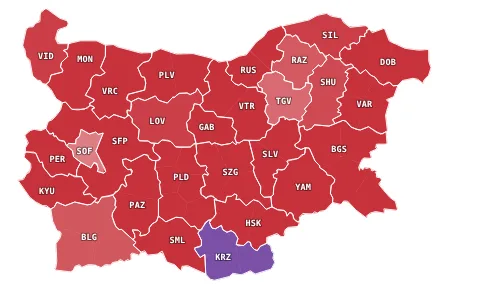
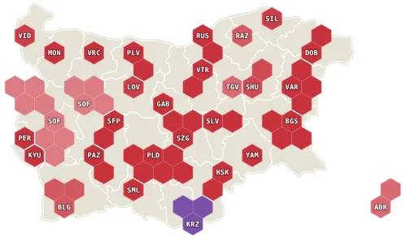
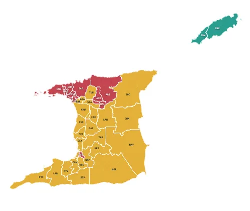
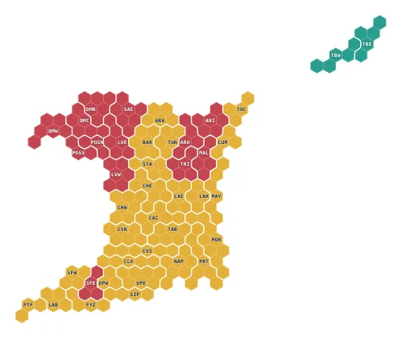
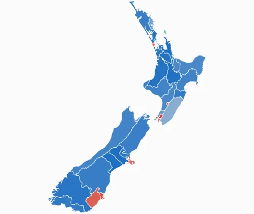
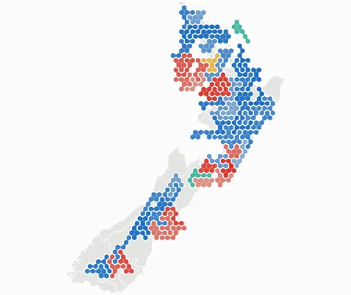

Election cartograms
Maps that start as a country’s real shape and morph, state by state, into hexagons sized by voters. Tap a region to resize it and see how voting populations distort the map.










Each page opens on the real map. Tap a region and it grows or shrinks in place to its share of voters while a dashed line keeps its true outline. Tap several to compare, drag a box to select many, or flip the whole map. A colour menu switches between winner and swing.